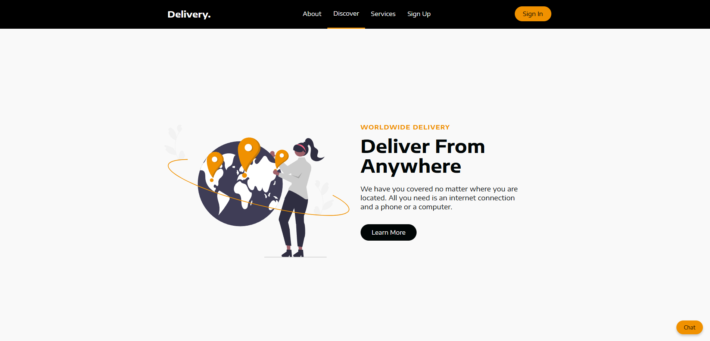
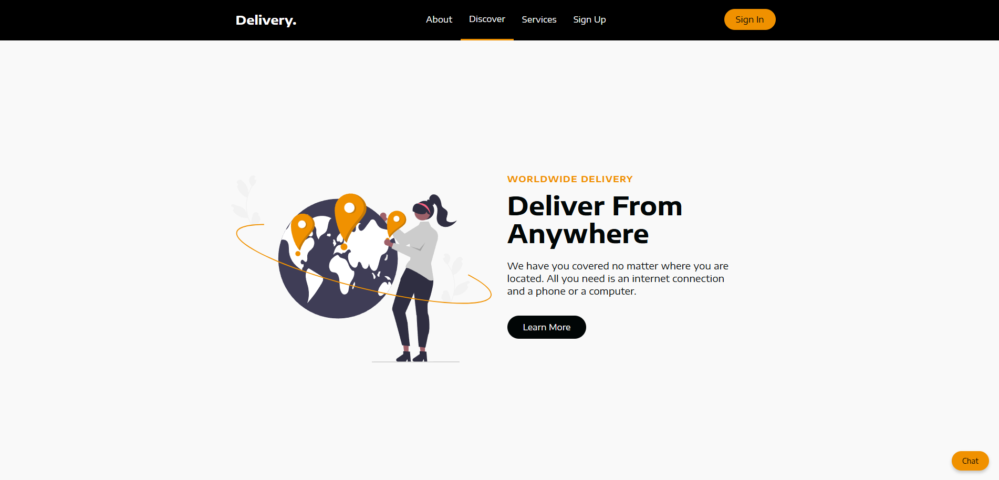
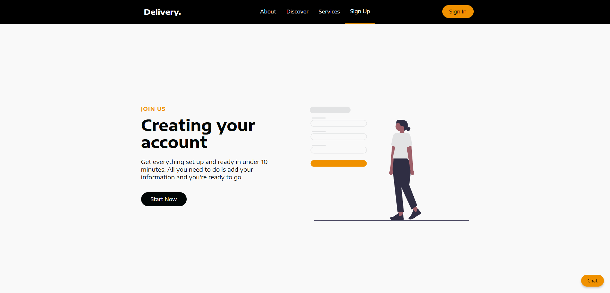
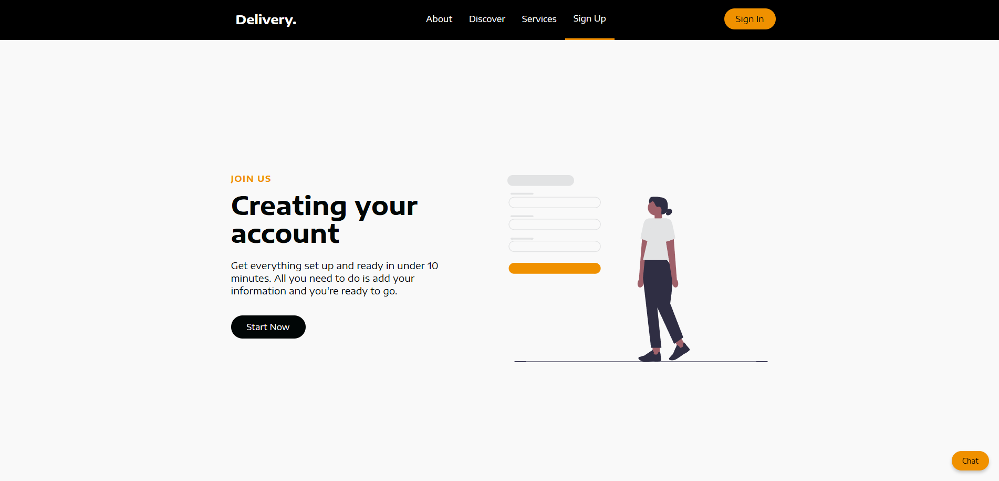

Nutrition app
WorldEats is a personalized nutrition and food discovery app designed to help users make healthier eating choices through smart, user-centered design.
Before beginning development, we started by creating user personas to represent key target groups such as home cooks seeking culinary diversity, health-conscious individuals, people with dietary restrictions, and busy professionals in need of meal planning tools. This helped us understand user needs, goals, motivations, and challenges, allowing for more effective customization of the app’s features and experience. These personas ensured our design decisions were user-centered, addressed specific pain points, and enhanced overall usability and satisfaction.
Next, we developed user journey maps to visually represent how users interact with the app. Highlighting key touchpoints, emotions, and pain points at each stage. Mapping these journeys gave us a better understanding of how users navigate the app and helped us identify opportunities to improve functionality and flow. This process ensured the app delivered a smooth, satisfying experience from first use through long-term engagement.
We then created low-fidelity wireframes to establish the basic structure and layout of the app’s interface. These wireframes focused on functionality and user flow rather than visual design, using simple shapes and neutral colors to outline key interface elements like buttons, menus, and content blocks. This allowed us to identify usability issues early, collect feedback from users and owners, and ensure the core experience was intuitive before investing in visual design.
With the structure validated, we moved on to building a high-fidelity prototype that brought the wireframe to life with interactive elements and visual styling. This allowed both users and owners to experience a more realistic version of the app, test usability, and provide meaningful feedback. This stage was critical for identifying design gaps, refining interactions, and ensuring the product aligned with user needs before entering development.
In the final phase, we developed and refined the WorldEats application by implementing features such as customizable filters for cuisine type and cooking time, step-by-step meal preparation guides, a built-in meal planner, and a dedicated community section with groups, videos, and discussion forums. The result is a comprehensive and user-friendly platform that supports individuals in discovering meals, organizing their nutrition, and connecting with others who share similar food and wellness goals.

Delivery Management Platform
The “Delivery” service is a user-friendly platform designed to simplify all phases of delivery management. Users can request delivery services by specifying pickup and drop-off details, after which the system provides a service quotation. The platform supports real-time communication between users and service providers to ensure easy coordination and features like live order tracking to keep track of package location and delivery progress. Secure payment options are included, and a chatbot offers support for any questions or issues users may encounter throughout the process, ensuring a simple and efficient delivery experience.
 

 


Class Scheduling & Booking Platform Application
GymLearn is a system designed to support organizations in offering group or private lessons (e.g., yoga, swimming) in various rented or owned spaces across multiple locations. It allows clients to browse and book available lessons, while instructors can register, view and take on lesson offerings. The system manages lesson scheduling, instructor assignments and client booking. For underage clients, bookings are handled by a legal guardian. An administrator oversees the system, managing offerings and user accounts.
As GymLearn was an early-stage startup with no prior system in place, the majority of our work focused on designing and building the backend infrastructure. The goal was to ensure the platform had a solid foundation for future growth. We prioritized data modeling, system logic, and modular architecture to support new feature additions down the line. While minimal frontend design was addressed during this phase, our backend work laid the groundwork for a scalable and maintainable application. If you want to see a short demonstration video, please contact us.
Here you can find the diagrams and models we created for GymLearn, including interaction diagrams, system sequence diagrams, OCL expressions, operation contracts, package diagram, relational data model, UML class diagram, domain model, and use case diagram.
Visit the System Showcase